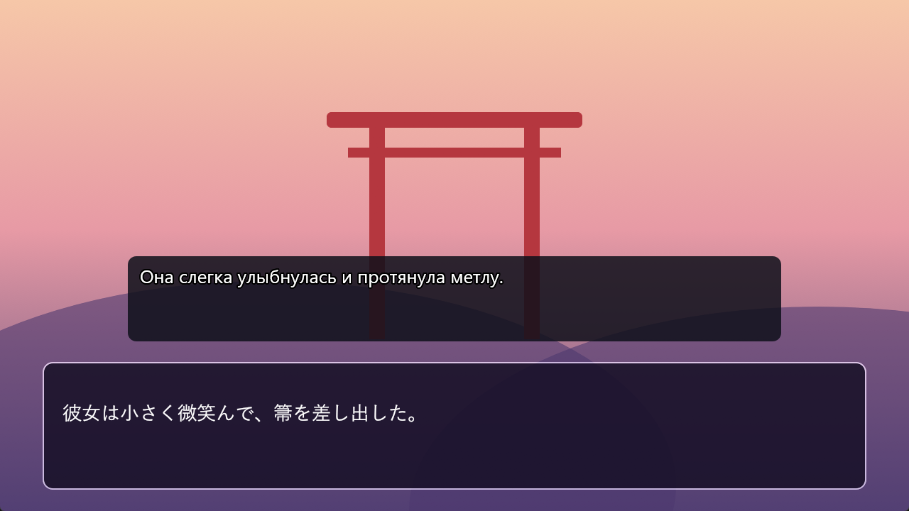
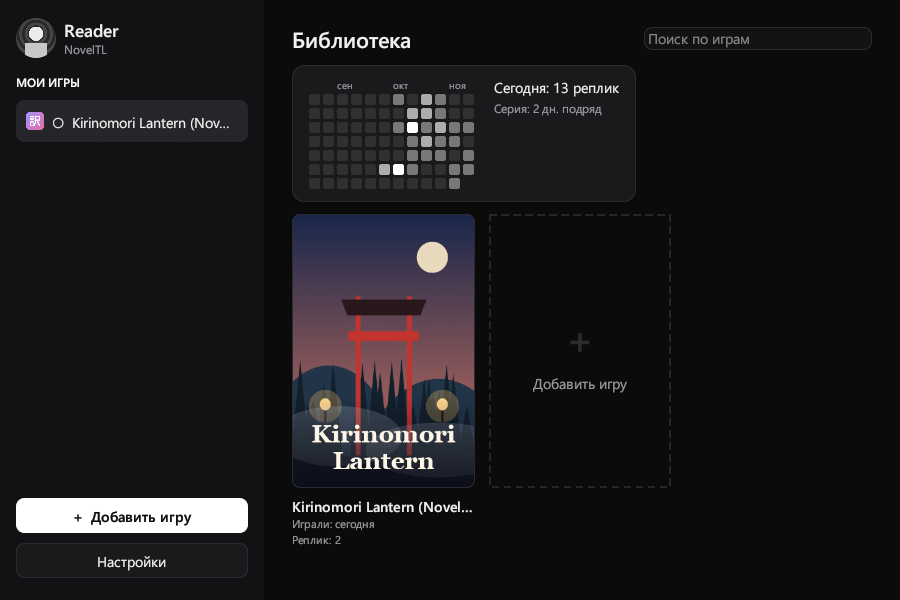
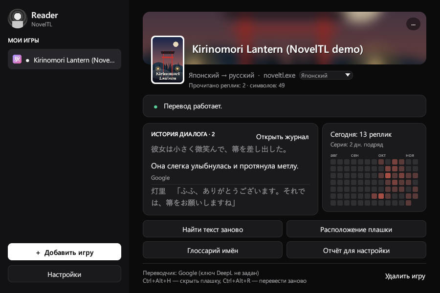
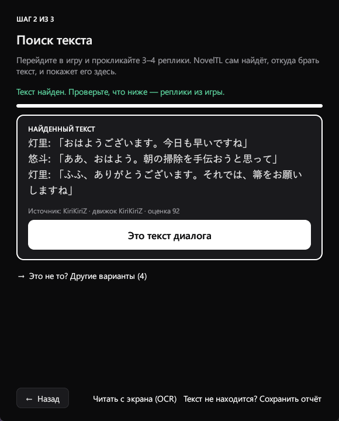
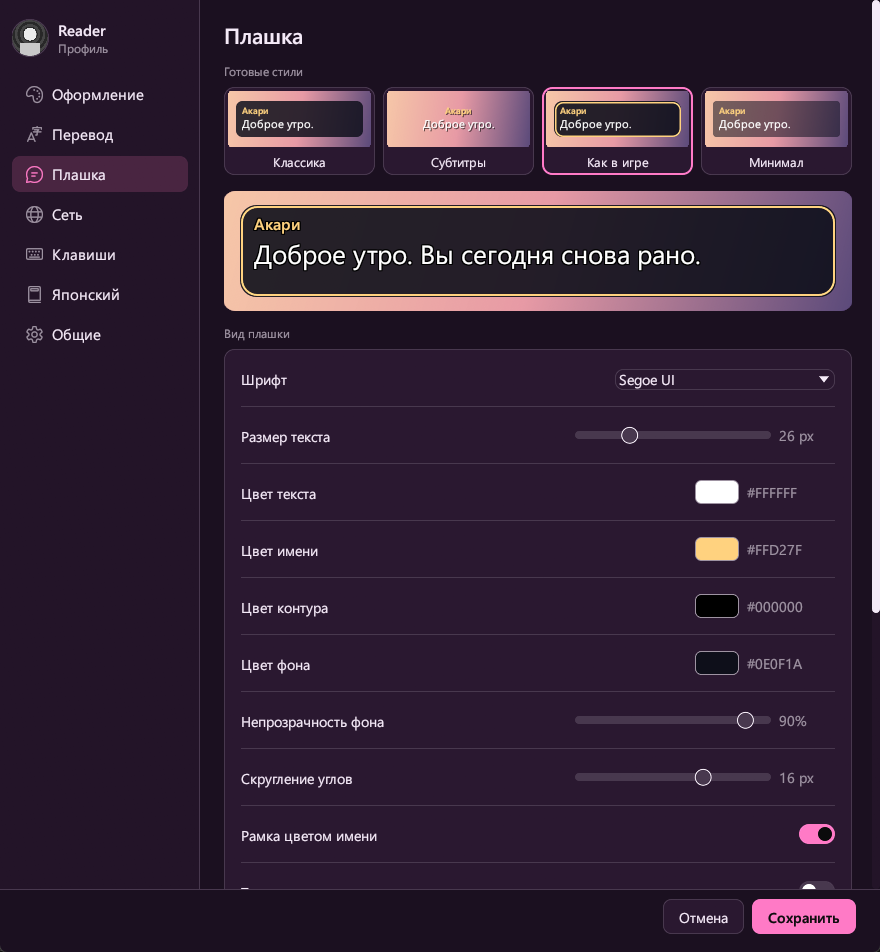
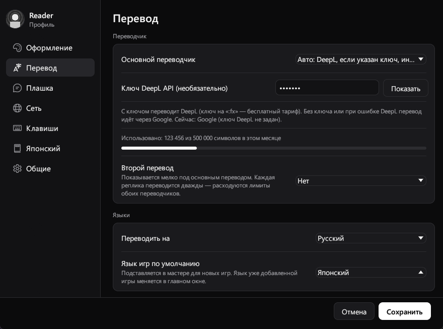
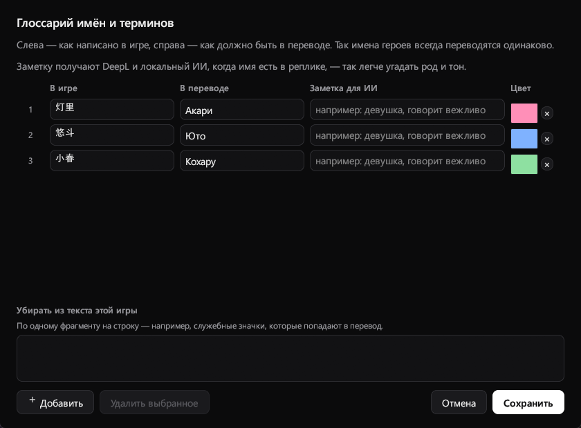

NovelTL
Переводчик визуальных новелл для Windows — перевод прямо поверх игры.

Возможности
Библиотека с обложками
Обложки игр (2:3, как в Steam) и кадры с VNDB — только с вашего согласия. Можно поставить свои.
Календарь чтения
Сетка активности как на GitHub: реплик по дням, «Сегодня» и серия дней — по игре и общий.
Плашка поверх игры
Прозрачна для мыши, не берёт фокус, двигается вместе с окном игры.
5 языков, с любого на любой
Японский, английский, китайский, корейский и русский.
DeepL и Google
Без ключа — Google, с ключом — DeepL; при отказе DeepL перевод идёт через Google.
Бесплатные варианты
Локальный ИИ (Ollama, LM Studio) без интернета и Microsoft Translator (2 млн символов в месяц).
Автоподбор хука
Прокликайте 3–4 реплики — найдётся поток с диалогом. Если перехват не находит текст — OCR.
Глоссарий имён
Имена и термины переводятся как вы задали, у каждого персонажа свой цвет имени.
Для изучающих японский
Фуригана, значения слов при наведении (JMdict) и «Добавить в Anki».
Свой вид
Готовые стили, шрифт, цвета, прозрачность, плавное появление и эффект печати.
Как начать
- Выберите игруЗапустите игру в оконном режиме, нажмите «Добавить игру» в NovelTL и выберите окно игры и язык оригинала.
- Найдите текстПрокликайте 3–4 реплики в игре и нажмите «Это текст диалога».
- Поставьте плашкуПеретащите плашку на окно диалога игры, растяните и нажмите «Готово».
Скриншоты






Бесплатно и с открытым кодом
NovelTL распространяется под лицензией GPL-3.0-or-later. Захват текста выполняет LunaHook из проекта LunaTranslator — без изменений. NovelTL не изменяет файлы игр.